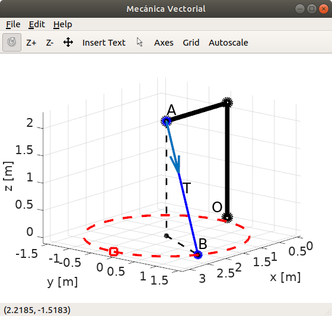
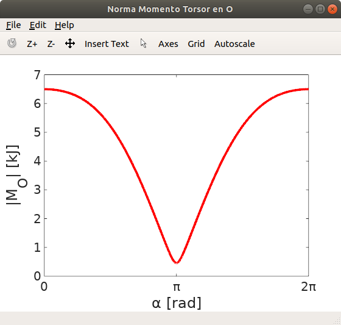

Esta obra está bajo una Licencia Creative Commons Atribución-NoComercial-CompartirIgual 4.0 Internacional
Clases
- Programa de Introducción a Octave
- Los vídeos explicativos de las Unidades se encuentran en el canal del grupo MoCCAI, disponibles en la Lista de Reproducción: Introducción a Octave.
- Unidad 0
- Unidad 1-A
- Unidad 1-B
- Unidad 2-A
- Unidad 2-B
- Unidad 3
- Unidad 4
- Unidad 5
- Espiral 3D: U2_ej_ezplot3_espiral3D.m
- Funciones trigonométricas: U2_ej_trigo_funcs.m
- Ajuste modelo de potencias: U3_ej_ajuste_potencias.m
- Bifurcación If-elseif-else: U4_ej_if_else.m
- Bifurcación Switch: U4_ej_switch.m
- Tirar dos dados. Bucle while: U4_ej_dosdados.m
- Sentencias break y continue: U4_ej_bucles_break_continue.m
- Script raíz-potencia: U4_ej_raizpote.m
- Función raíz-potencia: U4_raizpote.m
- Torque de un brazo tensionado.
Scripts ejemplos


Mecánica vectorial. El punto O se encuentra sometido a una tensión constante T por el cable que une los puntos AB. Se determina el momento torsor M_o generado en el punto O en función de la posición del punto B, para la trayectoria que se muestra en el plano XY (círculo rojo).
 Representación del momento torsor M_o generado en el punto O en función de la posición del punto B, para la trayectoria que se muestra en el plano XY (círculo negro).
Representación del momento torsor M_o generado en el punto O en función de la posición del punto B, para la trayectoria que se muestra en el plano XY (círculo negro).